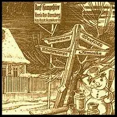
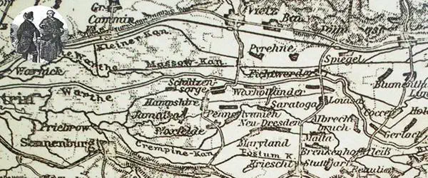
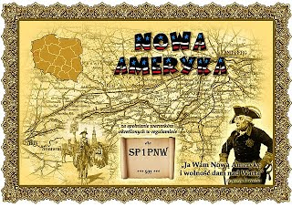

--------- Informacje ---------
---17.04.2023--------
Aktualizacja strony -
rezygnacja z php.
---17.04.2017--------
Zmiana serwera i adresu.
---17.04.2015--------
Wielka rozbudowa strony.
---13.07.2009--------
Zmiana wyglądu strony - optymalizacja.
---06.02.2004--------
Zalążek strony.
Nowa ameryka
Gdzie jest Nowa Ameryka ??
Jest to obszar ujścia Warty do Odry który za dawnych czasów był obszarem bagiennym z dużą ilością nieregularnych kanałów. Wykorzystywany był jedynie przez rybaków, natomiast dla rolnictwa był bezużyteczny. Na zlecenie Fryderyka II Wielkiego opracowano plany uregulowania biegu rzeki Warty i jej odgałęzień w rejonie Słońska, Krzeszyc i Lemierzyc. Prace były prowadzone do 1785 r. Legenda głosi, że kiedy wykonawcy przyszli do Fryderyka żeby zgodnie z wcześniejszą umową umożliwił im wyjazd do Ameryki, ten odpowiedział: ,, Ja Wam Nową Amerykę i wolność dam nad Wartą". Był to okres masowych wyjazdów do Ameryki za chlebem. Aby chłopom obszar ten kojarzył się z Ameryką, nowo powstającym miejscowościom nadawano egzotycznie brzmiące nazwy. I tak dzisiejsze Polne to była kiedyś Pensylwania, Ledargowo - Yorkstown, Jamno - Jamajka, Marianki - Maryland, Czaplin - Ceylon, Budzigniew - Hempshire, Żabczyn - New Ameryka, Sadowiec - Florida, Przemysław - Luisa,Koszęcin - Filadelfia, Sumiec - Sumatra, Kosarzewo - Korsyka, Kuczno - Anapolis, Zaszczytowo - Saratoga, Krępiny - Nowe Drezno, i wiele innych.
Nazwy te obowiązywały do 1945 roku. Po wojnie Komisja Nazewnictwa zmieniła nazwy na
polskie. Jedynie Malta została Maltą. Po wielu tych miejscowościach do dzisiaj przetrwały
tylko ruiny.

Podczas naszego wyjazdu chcemy sprawdzić ile egzotyki zostało jeszcze w tym niewątpliwie ciekawym rejonie. Dlatego też zapraszamy okolicznych kolegów do spotkania w Nowej Ameryce czy to osobiście czy poprzez "fale radiowe".
Marek SP3GVX (2009r.)
Zdjęcia z pierwszej wyprawy w 2010 roku.
Wyprawa do Nowej Ameryki 2010 -relacja.
W dniu 23.10.2010 z samego rana wyruszyliśmy na "dzikie" tereny NowejAmeryki, na
jeszcze nie wisiała żadna antena KF (no przynajmniej my nic o tym nie wiemy HiHI).
Napoczątkupodzieliliśmy się na dwie grupy: Słubice- Marek SQ200CHOPIN (SP3GVX), Józef
SP3SBY, TomekSP3WVL. Koledzy pracowali również pod znakiem klubowym SP3PJW oraz pozostali
czyli Adrian SQ1NXN,DarekSP1-14025 (aktualnie SQ1NXZ), Jurek SP1FMW, Weronika SQ1KSL,
Angelika, Paweł z synemBartkiem i mojaskromna osoba SQ1KSM wraz z Piotrusiem. Koledzy ze
Słubic pojechali do Sumatry (aktualnie-Sumiec) a my do Saratogi (aktualnie-Zaszczytowo).
Rozłożyliśmy sprzęt: antena pełny dipol na 80,radio FT450, akumulator i zaczęły się
pierwsze łączności. Postanowiliśmy również rozłożyć się na UKF. Adrian iDarek mieli
przygotowany zestaw do łączności na UKF w postaci masztu ok.4 m (składany do ok.1m)
ianteny GP. Również na tym paśmie zrobiliśmy kilka QSO.
Następną miejscowością był Maryland (aktualnie- Marianki). Teren bardzo podmokły w
dolinie-trudne warunki do pracy. Rozłożyliśmy się na kilka QSO i przenieśliśmy się do
Florydy (polana nieopodal Jamna) by tam razem już pracować w jednej grupie. Tutaj
rozłożyliśmy radiostację i antenę na środku górki tuż obok stacji kolegów ze Słubic,
którzy przyjechali z Pensylwanii (aktualnie - Polne).Dołączył do nas Mirek SP3JZX i
Stanisław SQ3ODX, odwiedził nas kolega Robert SQ3NTP. Było ognisko,kiełbaski i oczywiście
ciasto oraz miła atmosfera.Wszystkim życzymy tak udanych wypadów w teren.
Dziękujemy wszystkim biorącym udział w akcji oraz wszystkim, którzy łączyli się z nami na
falach eteru.
Dziękuję również za zgłoszenie emaile z logiem łączności na Dyplom. Napłynęło już
kilkanaście, prosimy pozostałych o informację mailem, już niedługo "edyplomy" zostaną
przesłane.
{kind=link}
{kind=link}
{kind=link}
{kind=link}
(2010r.)
Nowa Ameryka po raz drugi.
W tym roku 28 sierpnia 2011 roku członkowie klubów SP3PJW i SP1PNW powtórzyli wyprawę do
Nowej Ameryki. W zeszłym roku dyplom elektroniczny cieszył się dużym powodzeniem, a sama
wyprawa była dla nas wyjątkową przyjemnością, dlatego w podobnym składzie jedziemy zdobyć
kolejne tereny Nowej Ameryki. Byliśmy aktywni na wszystkich pasmach przez cały dzień.
Niektóre obszary Nowej Ameryki są jednocześnie obszarami SPFF (teren Parku Krajobrazowego
Ujście Warty - SPFF-105, obok Rezerwat Przyrody Lemierzyce - SPFF-176 oraz Rezerwat Dolina
Postomii - SPFF-174).
Dziękujemy za łączności i za przybycie odwiedzających.
{kind=link}
{kind=link}
{kind=link}
{kind=link}
(2011r.)
Spis znanych nam miejscowości Nowej Ameryki:
| Nazwa historyczna |
Współcześnie | QTH LOC. |
| Jamaika | Jamno | JO72KO |
| Hampshire | Budzigniew | JO72KO |
| New Ameryka | Żabczyn | JO72IN |
| Malta | Malta | JO72MO |
| Nowe Drezno | Krępiny | JO72LO |
| Maryland | Marianki | JO72LO |
| Saratoga | Zaszczytowo | JO72LO |
| Louisa | Przemysław | JO72MP |
| Pensylwania | Polne | JO72LO |
| Floryda | Sadowiec wzgórze koło Jamna | JO72KO |
| Sumatra | Sumiec |
JO72KO |
| Cejlon | Czaplin | JO72KO |
| Anapolis | Kuczno | JO72LO |
| Havannah | - | JO72LO |
| Savannah | Czubkowo | JO72LP |
| Philadelphia | Koszęcin | JO72LO |
| Korsika | Kosarzewo | JO72MP |
| Charleston | - | JO72KO |
| New York | - | JO72KO |
| Yorkstown | Ledargowo | JO72KO |
| Mannheim | - | JO72MO |
| Quebeck | - | JO72LO |

Dyplom
Regulamin dyplomu "Nowa Ameryka"
dla stacji Polskich/Zagranicznych.
- Zaliczane są QSO z każdą stacją biorącą udział w wyprawie.
- Wydawcą dyplomu „Nowa Ameryka 2011” są członkowie klubów SP3PJW i SP1PNW.
- Data wyprawy: 28 sierpień 2011.
- Zaliczamy:
- stacje SP - 4 QSO;
- stacje EU - 2 QSO;
- DX - 1 QSO;
- SWL jak wyżej (log musi zawierać oba znaki korespondentów, datę i godzinę).
- Łączności z dana stacja można powtarzać innym rodzajem emisji, na innym paśmie lub jeśli nadaje z innej miejscowości.
- Dyplom tylko w wersji elektronicznej.
- Zgłoszenie: wyciąg z logu na adres sp1-14025@o2.pl
- Termin zgłoszenia: do końca roku 2011.
- Wyprawa dojdzie do skutku, jeśli pozwolą na to warunki pogodowe.
Dyplomy wysyłane będą pod koniec września 2011 roku i później.
Hereby we members of clubstations SP1PNW nad SP3PJW kindly invite all amateurs which might
be interested to take part in a event called "The New America 2011".
If only weather conditions will not spoil our plans expedition will take place on 28th of
August 2011 - Sunday. We would like to encourage any radioamateur to look for us on that
specific day as a nice looking diploma will be issued for those who fulfil condicions .
They are as follow:
- Stations SP - 4 QSO's
- EU - 2 QSO's
- DX - 1 QSO
- SWL's - need to indicate both callsigns and time.
Contact with the same station can be repeated on different band ,using different mode or
when transmitting from different location.
Unfortunately this award is available in an electronic version only.Applications via
e-mail to sp1-14025@o2.pl Deadline is the end of
2011.
28 августа 2011 группа польских радиолюбителей SP3PJW, SP3GVX, SP3SBY, SP3WVL, SP3JZX,
SQ1NXN,
SP1PNW, SP1FMW, SQ1KSL, SQ1KSM будет проводить активность / p с территории "Новая Америка"
которая находится на территории парка - Park Krajobrazowy - Ujscie Warty - SPFF -105
(Польша).
За проведенные QSO можно получить электронный диплом "Новая Америка".
- Для станций Украины - 2 QSO
- Для станций EU -2 QSO
- Для станций DX - 1 QSO
- SWL - 2 QSO (DX -1 QSO)
Засчитываются QSO с одной станцией на разных диапазонах, разными видами модуляции, с
разных
территорий "Новой Америки", что в воеводстве LUBUSKIE (Польша).
Электронную заявку на электронный диплом присылать:
e-mail: sp1-14025@o2.pl
28 серпня 2011 року група польських радіоаматорів SP3PJW, SP3GVX, SP3SBY, SP3WVL, SP3JZX, SQ1NXN, SP1PNW, SP1FMW, SQ1KSL, SQ1KSM буде проводити активність /p з території "Нова Америка" котра знаходиться на території парку - Park Krajobrazowy - Ujście Warty - SPFF -105. За проведені QSO можна отримати електронний диплом "Нова Америка".
- для станций України - 2 QSO
- для станцій EU -2 QSO
- для станцій DX - 1 QSO
- SWL - 2 QSO( DX -1 QSO)
Зараховуються QSO з однією станцією на різних діапазонах, різними видами модуляції, з
різних
територій "Нової Америки", що у воеводстві LUBUSKIE.
Електронну заявку на електронний диплом надсилати:
Reglement des "neues Amerika" Diploms fuer polnische und auslanderlischen Laender.
- Angerechnet werden QSO mit jeden Station, die Teil an Expedition nimmt.
- Der Editor des "neues Amerika 2011" werden Mitglieder der Clubs SP3PJW und SP1PNW.
- Das Datum der Expedition : 28. August 2011
- Stationen SP- 4 QSO, EU- 2 QSO. DX- 1 QSO ( SWL LOg muss zwei Zeichen von der Korrespondenten, Das Datum und Die Stunde inhalten)
- Die Verbindungen zu bestimmten Stationen darf man wiedercholen bei anderer Art der Emissions, auf anderer Straehne oder, wenn es aus anderer Landschaft angegeben ist.
- Der Diplom ist nur in elektronischen Variante.
- Die Anmeldung:Auszug aus dem Log auf den Adress sp1-14025@o2.pl
- Der Termin der Anmeldung wird zum Ende des 2011 Jahr.
Wo findet die Neue Amerika statt?
Das ist ein Landschaft in der Naehe von Auslauf der Warta und Oder,
der war viel Zeit frueher ein morastigen Bereich. Er war nur von den Fischern genutzt
worden, und hatte keine Wertigkeit fuer den Bauern.
Auf Auftraf des Frideriks II den grossen, wurden die Plaene Regulierung den Fluss des
Wasser und ihr Abflussen bearbeiten.
Die Arbeit war bis zum 1785 gefuhren. Es ist gesprochen, dass wenn die Bauer zu den Koenig
kammen um ihm fragen nach Amerika kommen zu lassen, antwortete er"
Ich werde euch hier Neue Amerika und Freiheit auf Warta geben". Es war Zeit, wenn viele
Leute nach Amerika um Geld zu verdienen kamen.
Dass der Bereich den Bauern nur mit Amerika associert wurde, sind die neu entstanden
Lander egzotische Namen gegeben. Die heutigste Polne waren also Pensylwania
genannt,Ledargowo - Yorkstown, Jamno - Jamajka, Marianki - Maryland, Czaplin - Ceylon,
Budzigniew - Hempshire, Żabczyn - New Ameryka, Sadowiec - Florida, Przemysław -
Luisa,Koszęcin - Filadelfia,
Sumiec - Sumatra, Kosarzewo - Korsyka, Kuczno - Anapolis, Zaszczytowo - Saratoga, Krępiny
- Nowe Drezno
u.s.w.
Diese Namen waren in Kraft bis zum 1945. Nach der II Weltkrieg die Komission zum Namen hat
die aud polnischen verwenden. Nur Malta ist Malta geblieben. Von vielen dieser Bereichen
sind zum heute nur die Verfallen geblieben.
In der Zeit von unsere Expeditin wollen wir es checken, wie viel Egzotisches ist noch in
dieser Bereich gebliben. Deswegen laden wir unsere Bekannter zum Treffung in Neue Amerika
ein.
Persoenlich oder "auf die Wellen"